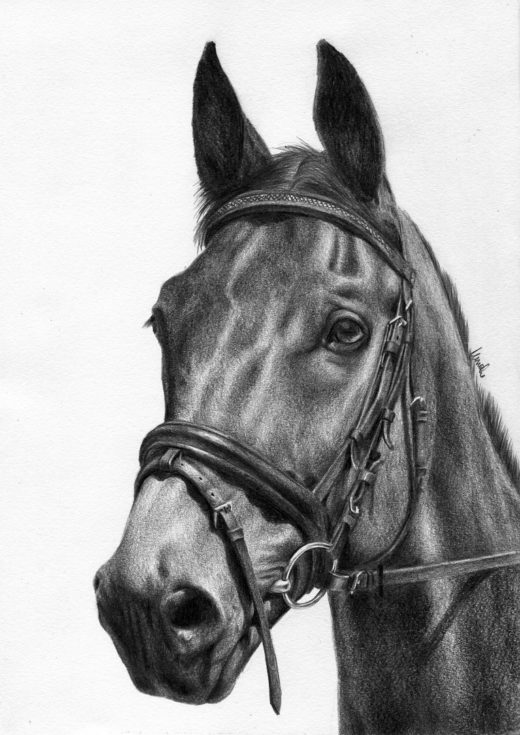

Wplyw koni na sytuacje gospodarcza w Polsce.
- Hodowla i handel konmi:
- Pozytywne aspekty: Hodowla koni może generować dochody dla rolników i przedsiębiorców związanych z branżą koni, takich jak hodowcy, trenerzy i handlowcy.
- Negatywne aspekty: Jednakże, ze względu na specyficzny charakter rynku koni, zyski mogą być zmienną kategorią, a hodowla koni może wymagać znacznych inwestycji.
- Sporty konne:
- Pozytywne aspekty: Organizacja imprez jeździeckich, zawodów i wystaw może przyciągać turystów, generować przychody z biletów i promować rozwój infrastruktury związanej z koniami.
- Negatywne aspekty: Wpływ może być ograniczony do określonych regionów, a infrastruktura i organizacja wymagają nakładów finansowych.
- Turystyka i rekreacja:
- Pozytywne aspekty: Konie mogą przyciągać miłośników koni, turystów jeździeckich oraz osób poszukujących aktywności rekreacyjnej.
- Negatywne aspekty: Wzrost turystyki konnej może być ograniczony do pewnych obszarów geograficznych.
- Praca i zatrudnienie:
- Pozytywne aspekty: Branża koni może generować miejsca pracy w obszarach związanych z hodowlą, treningiem, weterynarią, handlem oraz obsługą imprez jeździeckich.
- Negatywne aspekty: Specyfika pracy w tej branży może wymagać specjalistycznych umiejętności, co może ograniczyć dostęp do pracy dla niektórych osób.
